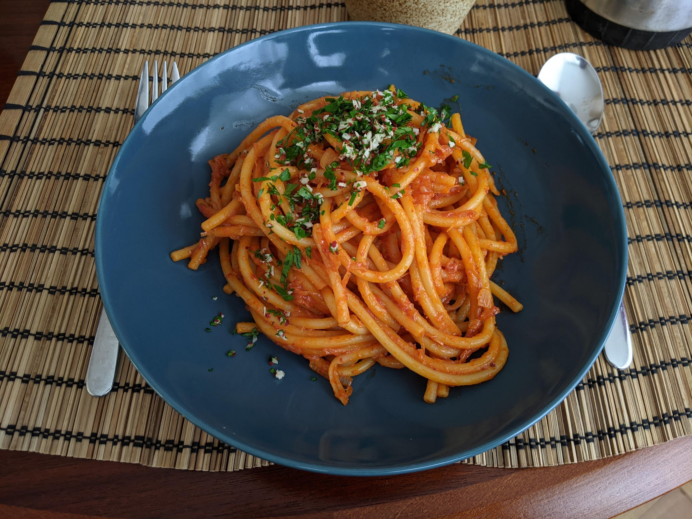

Pâtes aux échalotes caramélisées

Pour 4 personnes :
- 500g de pâtes
- 8 échalotes
- 6 gousses d'ail
- Une douzaine de filets d'anchois, ou une bonne grosse cuillère à café de miso
- 80g de concentré de tomates
- Une cuillère à café de piment en flocons (ou une cuillère à soupe si on veut que ça soit bien épicé, ou bien si on utilise du piment doux genre gochugaru)
- Un demi-bouquet de persil frais
- Sel, poivre, huile d'olive
- Éplucher et couper les échalotes en tranches très fines. Les faire revenir à feu moyen dans une casserole à fond épais, avec une quantité généreuse d'huile d'olive.
- Éplucher et couper toutes les gousses d'ail sauf une en tranches fines, les ajouter lorsque les échalotes commencent tout juste à être translucides.
- Laisser caraméliser le tout en remuant régulièrement, jusqu'à ce que ça prenne une couleur bien dorée. Si des bouts accrochent un peu, on peut rajouter un tout petit peu d'eau pour les racler.
- Pendant ce temps, éplucher la dernière gousse d'ail, laver le persil, et couper les deux en touts petits bouts que l'on réserve à part pour la décoration.
- Ajouter les anchois ou le miso dans la sauce, laisser fondre quelques minutes en continuant de mélanger, puis ajouter le piment, les tomates, et du poivre.
- Commencer à faire cuire des pâtes lorsque le mélange a pris une belle couleur de brique. Arrêter la cuisson juste avant al dente (il faut que ça soit bien croquant), en réservant un demi-litre d'eau de cuisson.
- Ajouter les pâtes égouttées dans la casserole de sauce, ajouter l'eau de cuisson par étapes, en laissant à feu moyen. Il faut que ça soit bien crémeux et que ça recouvre bien les pâtes, sans qu'il reste de liquide au fond.
- Servir immédiatement avec le mélange persil-ail sur le dessus, et pourquoi pas quelques flocons de piment en plus.